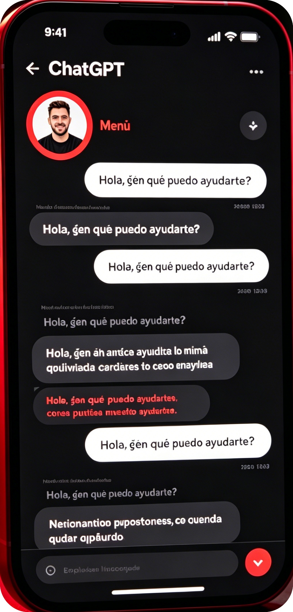
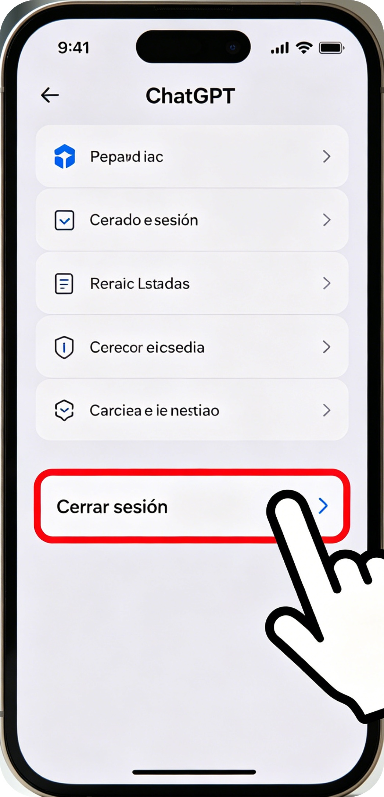
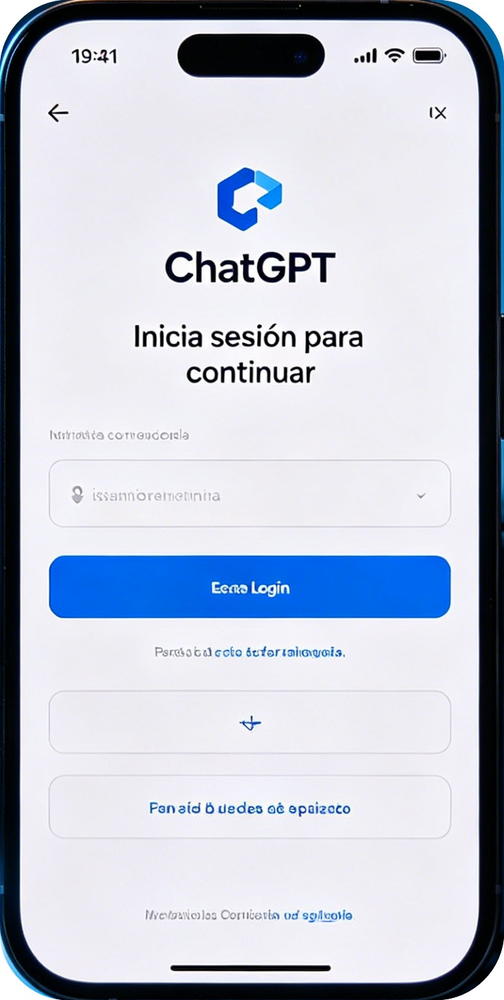
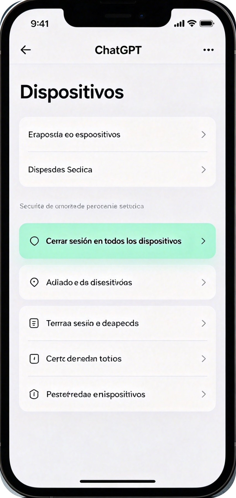

🇲🇽 Cierra sesión en dispositivos públicos | Protege tu cuenta ChatGPT 2026
[Espacio publicitario superior]
🚀 Resumen rápido: SIEMPRE cierra sesión en cibercafés, escuelas, oficinas o dispositivos ajenos. Olvidarlo = robo seguro de cuenta.
En México, miles de usuarios pierden acceso a ChatGPT por no cerrar sesión en computadoras públicas.
Cualquier persona puede usar tu cuenta, modificar tu contraseña o robar tu información.
⚠️ Riesgos de NO cerrar sesión
• Robo completo de tu cuenta
• Cambio de contraseña sin tu permiso
• Uso indebido con tu perfil
• Acceso a tus conversaciones privadas
• Bloqueo permanente por uso no autorizado
[Espacio publicitario central]
✅ Pasos para cerrar sesión CORRECTAMENTE (con imágenes)
Paso 1: Ve al menú de tu perfil
Ingresa a la sección de configuración de tu cuenta en ChatGPT.

Paso 2: Selecciona "Cerrar sesión"
Presiona el botón oficial para salir de la cuenta.

Paso 3: Verifica que aparezca la pantalla de inicio
Asegúrate de que nadie pueda volver a entrar sin volver a iniciar sesión.

Paso 4: Si es urgente, cierra sesión REMOTAMENTE
Desde tu celular, cierra sesión en todos los dispositivos a la vez.

📌 Dispositivos públicos donde DEBES cerrar sesión
- Cibercafés y locutorios
- Computadoras de escuela o universidad
- Equipos de trabajo u oficina
- Tabletas o celulares ajenos
- Wi‑fi público con dispositivos compartidos
✅ ¿Qué hacer si olvidaste cerrar sesión?
- Ingresa desde tu celular o computadora propia
- Ve a Configuración > Seguridad
- Cierra sesión en TODOS los dispositivos
- Cambia tu contraseña inmediatamente
📌 Resumen rápido para no olvidar
- Cierra sesión SIEMPRE en dispositivos públicos
- Usa el botón oficial de ChatGPT
- Verifica que la sesión quede cerrada
- Si olvidas, cierra sesión remotamente
[Espacio publicitario inferior]
💬 Deja un comentario
Una vez olvidé cerrar sesión en el cibercafé y me robaron la cuenta. Esta guía es esencial.
Ahora cierro sesión siempre en la escuela. Muy práctica y clara.